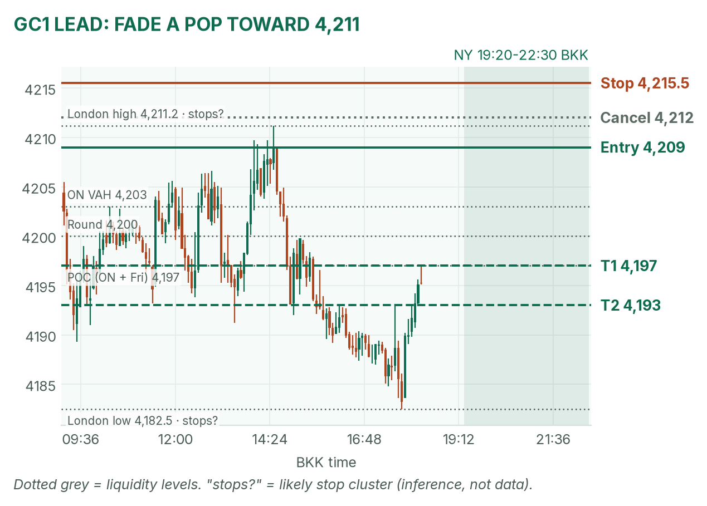
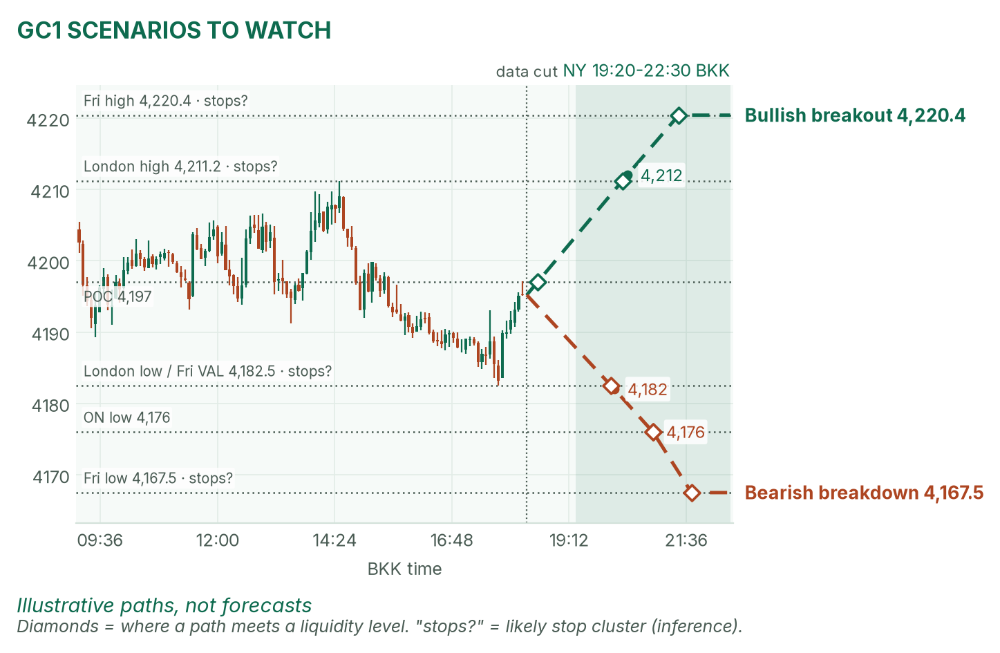
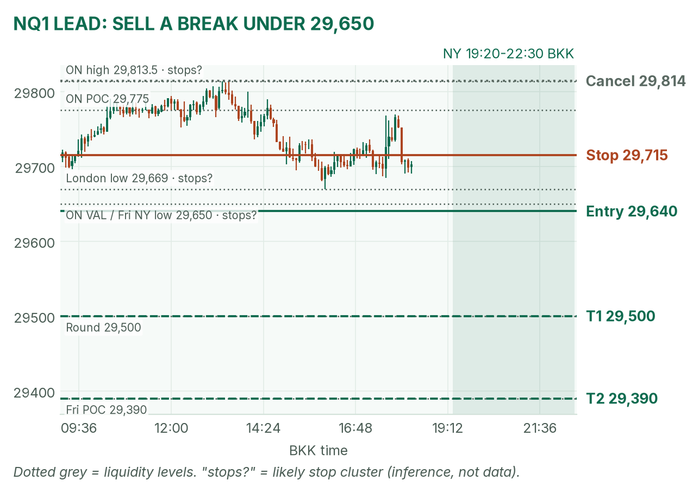
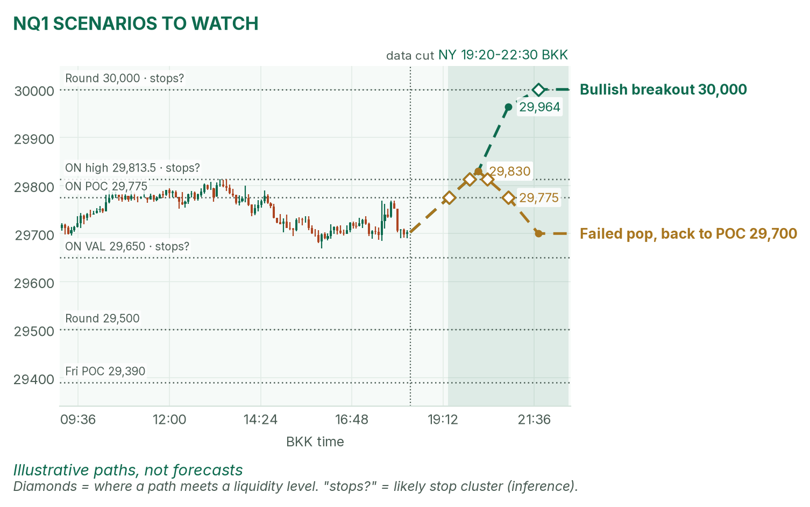

Gold is back at its busiest price. Nasdaq's bounce is stalling.
Window 19:20–22:30 BKK, COMEX gold open through the first two hours of US stocks. Data cut 18:20 BKK: GC 4,195.2, NQ 29,702.5 (TopstepX Z26). Levels only. Ideas, not advice.
Summary
GC: fade a failed pop toward 4,211. Sell 4,208–4,211, stop 4,215.5, targets 4,197 and 4,193. About 45%.
NQ: sell a 5-minute close below 29,650 after 20:35. Stop 29,715, targets 29,500 and 29,390. About 40%.
Canada CPI at 19:30 sits inside the window. Stand aside 19:25–19:32 and 20:55–21:02.
Flat by 22:30, no matter what.
The market story
Yields fell: the 10-year is 5.06%, down 3.8 basis points. Yields fell, so bond prices rose, and gold's opportunity cost (the interest you give up holding metal) shrank. Gold hit 4,211 in London, failed, and now sits at 4,195, near 4,197, the POC (busiest price) of overnight and Friday.
Nasdaq futures are up 1.06% from Friday's close, helped by cheaper oil. But the bounce has gone sideways for five hours under 29,814, and price is below both 4-hour averages (29,964 and 30,376) and the 20-day (30,781). The bigger trend is still down; today is a bounce inside it.
How I read it: gold is a range to fade, Nasdaq is a breakdown to follow if the floor at 29,650 gives.
News (BKK)
Time
Event
Forecast
Prior
Read
19:30
Canada CPI (Sep), y/y and m/m
3.2% / 0.2%
3.0% / −0.1%
Hot: yields up, mild drag on GC and NQ. Cold: the reverse. Small impact.
20:30
US cash open
–
–
The NQ opening range forms 20:30–20:35.
21:00
US NAHB housing index (Oct)
31
32
Low impact.
No-trade zones: 19:25–19:32 and 20:55–21:02. I found no Fed speaker today.
Levels to watch
Level
GC
NQ
Overnight high
4,211.2 (London)
29,813.5
Overnight POC
4,197
29,775
Overnight value area (where 70% of volume traded)
4,189–4,203
29,650–29,805
London low
4,182.5
29,669
Friday high / low
4,220.4 / 4,167.5
30,225 / 29,268.75
Friday POC
4,197
29,390
Typical window range (median / 80th pct, 20 days)
41 / 60 pts
292 / 389 pts
Gold (GC1)
Bias: neutral, a range. The daily trend is down (under the 20-day average, 4,221), the 4-hour is flat, and two sessions share a 4,197 POC, which tends to pull price back. London already sold off its 4,211 high once today.
The trade: mean-reversion fade
Entry
4,208–4,211 (plan 4,209), after the COMEX opening range forms: a poke above it into the London high, then a 5m close back below 4,208
Stop
4,215.5: above the London high (4,211.2) and the stops likely parked over it
A 15m close above 4,212 before entry, or no push to 4,208 by 21:30
Probability
~45%, an estimate. Basis: NY gold opening ranges mostly failed back to the POC in my Aug–Oct study (not significant); 12 points to T1 is under a third of a typical window.
Why: a tight stop behind a ceiling that already failed today. No pop above 4,208, no trade. April is mixed: she says gold needs yields under 5.10% to break 4,200 for real, and they are, but it keeps failing up there.

GC 5-minute bars to 18:20 BKK, window shaded. The London high (4,211.2) is the ceiling this fade leans on.

The other two setups: illustrative paths, not forecasts.
Scenarios to watch
Bullish breakout: two 15m closes above 4,212. Aims for Friday's high, 4,220.4.
Bearish breakdown: a 15m close below 4,182. Aims for 4,176, then 4,167.5.
Nasdaq (NQ1)
Bias: mildly bearish. Every higher timeframe points down, and the morning bounce stalled. Under 29,650 sit three lows, likely a stop cluster (an inference) that can fuel a drop.
The trade: bearish range breakout
Entry
29,635–29,645 (plan 29,640), on a 5m close below both the 20:30–20:35 range low and 29,650
Stop
29,715: back above the London low (29,669) and into the afternoon congestion
A 5m close above 29,814 before entry, or no trigger by 22:00
Probability
~40%, an estimate. Basis: NQ 5-minute opening-range breakouts averaged +0.37R in my study (31 sessions, not significant); 140 points to T1 is about half a typical window.
Why: with the trend, through a stop cluster,. After 21:00, stay short only below VWAP (the volume-weighted average price). April is mixed: she calls the bounce real but narrow.

NQ 5-minute bars to 18:20 BKK. The trade needs the 29,650–29,669 lows to break.

Breakout and failed-pop paths, illustrative only.
Scenarios to watch
Bullish breakout: a 5m close above 29,814 after 20:35. Aims for the 4-hour average at 29,964, then 30,000.
Failed pop: a poke over 29,814 that closes back under 29,775 within 15 minutes. Aims for 29,700.
6E (not traded in NY): 1.12525, back from the London low of 1.1213 to near the overnight value-area high (1.1255).
Before you click
ORB bases. GC NY: the 19:20 COMEX range ends at the first candle under half the average volume of the first two; fade to POC. NQ: 20:30–20:35 range, trade breakouts.
Checklist. 1) Room to today's max loss? 2) Within daily rules? 3) No release within 30 minutes? 4) Agrees with the bias? 5) At a marked level? 6) Setup tagged? 7) Entry, stop, 1R partial, target set? 8) Calm, not chasing?
Reset (60 seconds). Hands off the mouse. Breathe in 4, hold 4, out 6, five times. Name the feeling in one word. Say the plan aloud. "Eager" or "frustrated"? Wait 5 minutes.
TopstepX Z26 bars, read-only; overnight starts 05:00 BKK. Calendar: CIBC Week Ahead (Bloomberg consensus), Forex Factory. Yields: April's pre-London brief (her pre-NY brief was not out at the data cut).